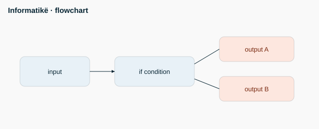

Informatikë - Mid - M1 — Funksione

- def përcakton funksion
- return kthen rezultatin
- Parametrat kanë vlera default: f(x, y=2)
- Variablat lokale jetojnë vetëm brenda funksionit
- Funksioni pa return kthen None
Kod / formulë
def f(x, y=2):
return x * y
print(f(3)) # 6
print(f(3, 4)) # 12